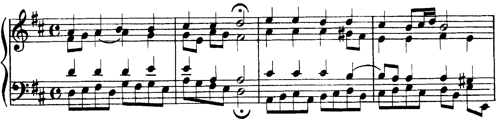

Prima le note di figurazione nelle quattro parti: passaggio, volta, sfuggita, appoggiatura, anticipazione. Poi i ritardi della lezione 1 all’ascolto. Il ritardo non si sente arrivare: la nota c’è già. Si sente il basso che cambia sotto di lei, la dissonanza sul tempo forte e la risoluzione che scende. Poi si decide quale.
Il ritardo avviene sul tempo forte o sull’accento forte del tempo debole, ma esso è ritmicamente debole rispetto alla nota che lo prepara, a causa della legatura.
W. Piston, Armonia, p. 122
Lezione di due ore. Seconda ora: Officina: un basso di sedici battute con ritardi e note di passaggio. I compiti per casa sono alla fine.
A9Figurazione, contrappunto e imitazione, lezione 35 «Note di figurazione melodica», pp. 88–91
Le lezioni 37–40 dello stesso capitolo (i ritardi, pp. 94–107) sono la materia della lezione 1.
La figurazione è «il processo che dà forma al profilo delle singole linee melodiche attraverso l’inserimento di note di figurazione tra le note strutturali degli accordi». Le note di una linea sono reali (appartengono all’accordo), estranee (non vi appartengono) o reali ausiliarie (r/a): note dell’accordo con funzione di figura (D’Urso, Bertolini, p. 88). Piston: le dissonanze di origine melodica «vengono chiamate note estranee all’armonia» (Armonia, p. 111).
«Un procedimento basato sulla suddivisione di un intervallo melodico in note di valore minore ma complessivamente corrispondenti all’intervallo di partenza» (p. 88). Le note sui movimenti restano quelle dell’impianto: la figurazione sta in mezzo.
Le bb. 5–8 hanno le armonie delle bb. 1–4, e le stesse note sui movimenti forti. In ogni metà di battuta si muove una voce sola: il basso (b. 5), il soprano, il contralto, di nuovo il basso (b. 6). La sigla sopra il rigo dice il tipo (p passaggio, v volta, r/a nota reale ausiliaria, an anticipazione) e, fra parentesi, la voce (S, A, T, B).
Il brano guida dell’unità, analizzato all’ora 35: un corale in cui tutte e quattro le voci figurano. Ascoltare il primo verso (levare e bb. 1–2) e indicare quale voce si muove in crome sotto la melodia.
La figurazione che cambia l’accordo. Una nota di passaggio consonante con le altre voci forma una triade nuova e altera il ritmo armonico dell’impianto: Dionisi chiede che la nota di passaggio abbia «carattere di dissonanza», «altrimenti stabilirebbe una nuova armonia» (Studi sul Corale, p. 63).
«Posta su un punto debole della battuta», riempie normalmente «un intervallo di terza, collegando per grado congiunto due note dello stesso accordo o di due accordi diversi»; può essere diatonica o cromatica (p. 89). Prosegue nella direzione da cui viene.
«Costituisce la figurazione di un’unica nota ripetuta e crea un piccolo arco ascendente (volta superiore) o discendente (volta inferiore), quest’ultimo preferibilmente di semitono» (p. 89). Va e torna alla stessa nota.
Sul tempo forte passaggio e volta diventano accentati (p/a, v/a) e acquistano «un rilievo espressivo decisamente più consistente» (pp. 89–90). Due note di passaggio possono muoversi insieme, «generalmente a distanza di terza»: fra loro sono consonanti, e la dissonanza si addolcisce (p. 90).
Alla b. 3 soprano e basso scendono insieme per grado, in decime: è la figurazione multipla. Alla b. 4 e alla b. 8, sulle cadenze, la figurazione si ferma; alla b. 5 il contralto riempie una quarta con due note di passaggio successive, che Dionisi ammette «purché colleghino due note reali» (p. 63).
Il passaggio verso l’unisono con un’altra voce: il libro chiede di evitarlo, e di evitare «la volta intorno all’unisono» (p. 89). Il passaggio verso la terza già presente in un’altra voce, che la raddoppia sul tempo forte (Dionisi, pp. 63–64). La volta superiore di tono e quella inferiore di tono trattate allo stesso modo: la inferiore suona meglio di semitono, come una sensibile.
| Figurazione | Come si riconosce | Nell’es. 2 |
|---|---|---|
| Sfuggita (sf) | una volta «incompleta, cioè agganciata a una sola nota reale»: si arriva per grado, si lascia per salto, di solito di terza in senso opposto (p. 90; Piston, p. 123) | b. 6, si del soprano |
| Appoggiatura (ap) | «nota estranea accentata raggiunta per salto e risolta per grado» (p. 90; Piston, p. 117) | b. 6, fa del soprano |
| Anticipazione (an) | figurazione disaccentata: una parte «anticipa sul primo accordo una nota appartenente all’accordo successivo», frequente nelle cadenze (p. 90; Piston, p. 116) | b. 7, do del soprano |
| Volta doppia (vd) | «una coppia di note di volta, superiore e inferiore o viceversa», dette anche note di cambio (p. 90) | — |

Alla b. 1 contralto e basso salgono insieme per grado, fa♯–sol–la e re–mi–fa♯: due note di passaggio in decime sulla stessa croma, la figurazione multipla della slide precedente. Sul terzo movimento il basso fa sol–fa♯–sol, una volta inferiore di semitono. Alla b. 2 il basso scende per grado la–sol–fa♯–mi fino al re della cadenza, mentre sopra si tiene la dominante; alla b. 3 la stessa figura di tre crome sale due volte, la–si–do♯ e si–do♯–re: una sequenza. Alla b. 4 il soprano sale da do♯ a re e salta di terza sul si: una sfuggita superiore. Le note legate del contralto (b. 1) e del tenore (bb. 3–4) sono ritardi, la materia della lezione 1.
Chiamare appoggiatura un ritardo. Tutte e due cadono sul tempo forte e scendono per grado; il ritardo però è già presente, nella stessa voce, nell’accordo precedente, l’appoggiatura arriva per salto (Piston, p. 122).
Le note di figurazione possono «rendere espliciti gli intervalli nascosti nelle relazioni di ottava e di quinta, creando ottave e quinte parallele» (D’Urso, Bertolini, p. 91). Dionisi aggiunge, fra le restrizioni del contrappunto vocale, «i procedimenti paralleli di dissonanze di 9ª, 7ª e di 2ª» (pp. 63–64).
«È bene che una figurazione melodica sia seguita da un movimento ritmico analogo in un’altra voce, secondo la tecnica del ritmo complementare, per evitare un arresto improvviso del flusso musicale» (p. 97). Il movimento passa da una voce all’altra; si ferma soltanto alle cadenze.
1. L’impianto a note lunghe, controllato. 2. Una voce per volta, una metà di battuta per volta: la figurazione. 3. Dopo ogni nota aggiunta, la nota contro ciascuna delle altre tre voci, sull’attacco e su quello successivo. È il metodo di Dionisi per il corale figurato: prima l’ossatura, poi la parte che si muove (pp. 62–63).
Figurare due voci insieme senza volerlo: nascono parallelismi che l’impianto non aveva. Controllare soltanto i tempi forti: le ottave del dettaglio cadono fra una croma debole e il battere seguente. Nel corale BWV 326 (già ascoltato nell’unità 3) il basso procede in crome sotto le minime e le semiminime delle voci superiori: il movimento sta tutto in una parte, e le altre tre la lasciano sentire.
Passaggio e volta, disaccentati o accentati; multiple, in terze o seste; sfuggita, appoggiatura, anticipazione, volta doppia. La nota reale ausiliaria è una nota dell’accordo usata come figura.
Ogni nota aggiunta contro le altre tre voci, su ogni attacco: le figurazioni rendono esplicite ottave e quinte nascoste.
Il movimento passa da una voce all’altra e si ferma alle cadenze. Prima l’impianto, poi una voce per volta.
A9I ritardi, lezioni 37–40, pp. 94–107, e le attività «Verso le competenze» delle stesse lezioni (pp. 272–274), con l’ascolto in rete del Lamento della ninfa di Monteverdi per il 4–3 e il 7–6.
Un ritardo si riconosce in tre tempi: il basso cambia (o, nel 2–3, cambiano le voci sopra), una voce resta e diventa dissonante «in posizione metrica accentata», quella voce scende di grado e l’accordo si completa (D’Urso, Bertolini, p. 94). La nota non attacca: per questo si ascolta la voce che non si muove.
| Formula | Che cosa si sente |
|---|---|
| 4–3 | un accordo senza terza, con la quinta: vuoto e teso; la terza arriva dopo, scendendo (p. 96) |
| 9–8 | la dissonanza più aspra, perché la nota di risoluzione suona già nel basso (p. 97) |
| 7–6 | un primo rivolto che si chiarisce in ritardo: dissonanza più morbida, spesso prima della dominante (p. 100) |
| 2–3 | le voci superiori cambiano accordo e il basso arriva un movimento dopo, scendendo (p. 105) |
Prendere la quarta e sesta per un solo 4–3: sulla quarta e sesta scendono due voci insieme, il 4–3 e il 6–5 (p. 97). Prendere un’appoggiatura per un ritardo: l’appoggiatura attacca, il ritardo è legato. Contare dal soprano: la numerica si conta sempre dal basso.
Otto caselle, una per battuta, con le funzioni: T, S, D. Sotto ogni casella una striscia: dove si è sentito un ritardo si scrive la formula (4–3, 9–8, 7–6, 2–3). Dove non c’è, la striscia resta vuota: nel dettato di oggi capita più di una volta.
Riempire tutte le strisce: la striscia chiede quale ritardo, non se l’accordo è dissonante. Scrivere 9–8 per un 2–3: nel 2–3 a scendere è il basso. Lasciare vuoto per prudenza: fra quattro formule si sceglie sempre.
Sol maggiore, quattro quarti, otto battute, un accordo per battuta, quattro parti. Il soprano si muove poco: i ritardi stanno anche nelle voci interne e nel basso.
Quattro ascolti, con le fasi della slide precedente. Sul foglio: le otto funzioni e, sotto, la striscia.
La voce che resta mentre il basso cambia, la dissonanza sul tempo forte, la discesa di grado.
4–3 senza terza; 9–8 con l’ottava già nel basso; 7–6 su un primo rivolto; 2–3 con il basso in ritardo.
Si scrive solo dove c’è un ritardo. Vuota, dove non c’è.
La lezione si chiude con il solfeggio (parlato, cantato, ritmico) e con un basso di otto battute in re minore con i ritardi, per casa. L’ora 34 è l’officina: un basso di sedici battute con ritardi e note di passaggio.
Un basso cifrato in re maggiore, con sette ritardi e tre note di passaggio già scritte. Prima i ritardi e le loro preparazioni, poi l’impianto, per ultime le figurazioni.
Realizza la seguente traccia, che contiene le principali figurazioni contrappuntistiche di ritardo.
D. D’Urso, C. Bertolini, Il linguaggio della musica, 4° anno, p. 107
A9Lezione 40 «Ritardi con funzione contrappuntistica», «Scrittura per tastiera», esercizio 2, «Basso numerato» (p. 107); lo schema riassuntivo dei ritardi alle pp. 106–107.
B. 2: 4–3 sul V. B. 3: 9–8 sul I. B. 4: 7–6 sul ii6. B. 5: 2–3 al basso, già scritto. B. 10: 9–8 sul ii. B. 12: 4–3 sul V. B. 13: 4–3 sul I, preparato dalla settima del V7. Le note di passaggio del basso (bb. 1, 6, 14) sono date; nelle voci superiori se ne aggiungono almeno quattro.
1. I ritardi, all’indietro. Per ogni ritardo si sceglie la voce che lo porta e si scrive prima la sua preparazione nell’accordo precedente, poi la percussione e la risoluzione. Si controlla che la nota di risoluzione non stia in un’altra voce e che nel 4–3 ci sia la quinta.
2. L’impianto. Le altre note a valori larghi, con la condotta ordinaria: «il ritardo non è in grado di mascherare» gli errori della successione di base (D’Urso, Bertolini, p. 98).
3. La figurazione. Una voce per volta, dove c’è un intervallo da riempire e nessun’altra voce si muove (ritmo complementare, p. 97); ogni nota aggiunta si controlla contro le altre tre (p. 91). È l’ordine di Dionisi: prima l’ossatura, poi la parte che si muove (Studi sul Corale, pp. 62–63).
Nell’esempio i quattro ritardi stanno in quattro voci diverse: contralto (b. 2), tenore (b. 3), soprano (b. 4), basso (b. 5). La preparazione di ciascuno è la nota della stessa voce nell’accordo prima: il si♭ del IV, il do del V, il re del I6, il si♭ del I. Le figurazioni arrivano dove l’impianto lascia spazio: il fa di passaggio del basso alla b. 6, l’anticipazione del soprano alla cadenza.
Il corale che si analizza nell’ora seguente: ritardi e figurazione nelle quattro parti, con la melodia data al soprano.
La preparazione mancante. Il ritardo viene scritto sul tempo forte e solo dopo si cerca la nota nell’accordo prima: spesso non c’è, o sta in un’altra voce. Si scrive prima la preparazione.
La risoluzione anticipata. La nota su cui il ritardo deve scendere è già in un’altra voce: il 4–3 con la terza, il 2–3 con la sensibile sopra la tonica legata.
Le ottave sotto il ritardo. Il ritardo ritarda una nota, non la toglie: se la successione senza ritardo ha ottave o quinte, le ha anche con il ritardo (p. 98).
La figurazione sopra il ritardo. Una nota di passaggio nella voce che sta risolvendo, o nello stesso movimento, copre la dissonanza: si figura un’altra voce, e in un altro movimento.
Copiare il basso su due righi. Soprano di partenza fa♯ (quinta linea). 1. Sopra le bb. 2, 3, 4 e 5 scrivere la voce che porta il ritardo, con la preparazione e la legatura (4 minuti). 2. Completare le bb. 1–8 a quattro parti (6 minuti). 3. Una nota di passaggio in una voce superiore, dove nessuna altra voce si muove (2 minuti).
Per ognuno: la voce, la preparazione nell’accordo prima, la risoluzione. Nessuna nota di risoluzione altrove.
Condotta ordinaria: il ritardo non copre ottave e quinte. Nel 4–3 la quinta.
Una voce per volta, dove c’è spazio; ogni nota contro le altre tre.
La lezione si chiude con il solfeggio (parlato, cantato, ritmico) e con le bb. 9–16 per casa. Nell’ora seguente il corale figurato di Bach, BWV 305.
Compiti per la prossima volta
Completa a quattro parti, su due righi, il basso di sedici battute in re maggiore dell’officina: le bb. 1–8 corrette in classe, le bb. 9–16 nuove. Ritardi: b. 10, 9–8 sul ii; b. 12, 4–3 sul V; b. 13, 4–3 sul I, preparato dalla settima del V7.
Prima i ritardi con le loro preparazioni, poi l’impianto, per ultime le figurazioni: almeno quattro note estranee nelle voci superiori (passaggio, volta, anticipazione alla cadenza), una voce per volta. Legatura su ogni preparazione. Sopra ogni nota estranea la sigla.
Sul quaderno, a matita. La foto del lavoro finito va su Classroom. Nel Workbook: apri l’esercizio C4-U5-L4-04 ↗
Compiti per la prossima volta
n. 284 e n. 285 parlato · n. 286 e n. 287 cantato · n. 288 e n. 289 ritmico
Ogni pezzo a tempo, senza fermarti: il parlato a nomi, il cantato prendendo il primo suono dalla tastiera, il ritmico battendo la pulsazione.
Scrivi la linea del basso sul quaderno, in chiave di basso: otto battute in 3/4, la maggiore. Il primo suono è la. Prima il riferimento, poi tutto due volte, ogni coppia di battute due volte, il collegamento 1–4, 3–6 e 5–8, e tutto per controllare.
Il riferimento: accordo di tonica e primo suono
Il dettato · otto battute
Le sezioni (riferimento, tutto, le coppie, il collegamento) si ascoltano una per una e si ripetono quanto serve; le fasi fanno la procedura della classe, con gli annunci e le pause, da qualunque punto.
Sul quaderno scrivi in testa la sigla C4-D-U05-L4. Si corregge all’inizio della prossima lezione.
Compiti per la prossima volta
Scrivi un contrappunto di quinta specie (il contrappunto fiorito) sopra il canto fermo, in modo dorico (finale re): otto battute. Comincia su una consonanza perfetta, alla cadenza la sensibile sale alla finale, niente quinte e ottave consecutive.
Sul quaderno, con la sigla C4-CP-U05-L4 in testa; la foto va su Classroom.
Realizza a quattro parti il basso senza numeri: dieci battute in 4/4, fa maggiore. Trova tu l’accordo di ogni nota (la regola dell’ottava è il punto di partenza) e scrivilo sotto; poi il soprano, poi le voci interne. Accordi che puoi usare: anche la settima di sensibile.
Sul quaderno, con la sigla C4-BD-U05-L4 in testa; la foto va su Classroom.
Armonizza a quattro parti il canto dato: dieci battute in 4/4, si♭ maggiore. Prima le cadenze, poi il basso per intero, e solo alla fine contralto e tenore. Accordi che puoi usare: anche la settima di sensibile.
Sul quaderno, con la sigla C4-CD-U05-L4 in testa; la foto va su Classroom.
Scritto: Il basso dell’officina: le sedici battute finite (Workbook, esercizio C4-U5-L4-04), sul quaderno; la foto va su Classroom. Solfeggio dal quaderno di lettura: parlato n. 284, 285; cantato n. 286, 287; ritmico n. 288, 289 (a tempo, senza fermarsi). Dettato C4-D-U05-L4 dalla pagina della lezione (sezioni da ascoltare, o le fasi della procedura guidata), sul quaderno con la sigla. Contrappunto di quinta specie sul canto fermo (C4-CP-U05-L4). Basso senza numeri da realizzare a quattro parti (C4-BD-U05-L4). Canto dato da armonizzare a quattro parti (C4-CD-U05-L4).
In classe
A nomi, a tempo, con la mano che batte. Chi si ferma riparte dalla battuta dopo.
Apri il n. 280 nel quaderno di lettura ↗ chiave di tenore · 2/4
In classe
Si prende il tono dalla tastiera, si canta insieme; poi a gruppi.
Apri il n. 281 nel quaderno di lettura ↗ chiave di violino · 3/4 · mi minore
Apri il n. 282 nel quaderno di lettura ↗ chiave di violino · 6/8 · fa maggiore
In classe
Tutti insieme, battendo la pulsazione. Poi a file, due battute a testa.
In classe
Completa a quattro parti, su due righi, il basso di sedici battute in re maggiore dell’officina: le bb. 1–8 corrette in classe, le bb. 9–16 nuove. Ritardi: b. 10, 9–8 sul ii; b. 12, 4–3 sul V; b. 13, 4–3 sul I, preparato dalla settima del V7.
Dieci minuti insieme sul quaderno, alla lavagna il primo punto; il resto è il compito per casa.